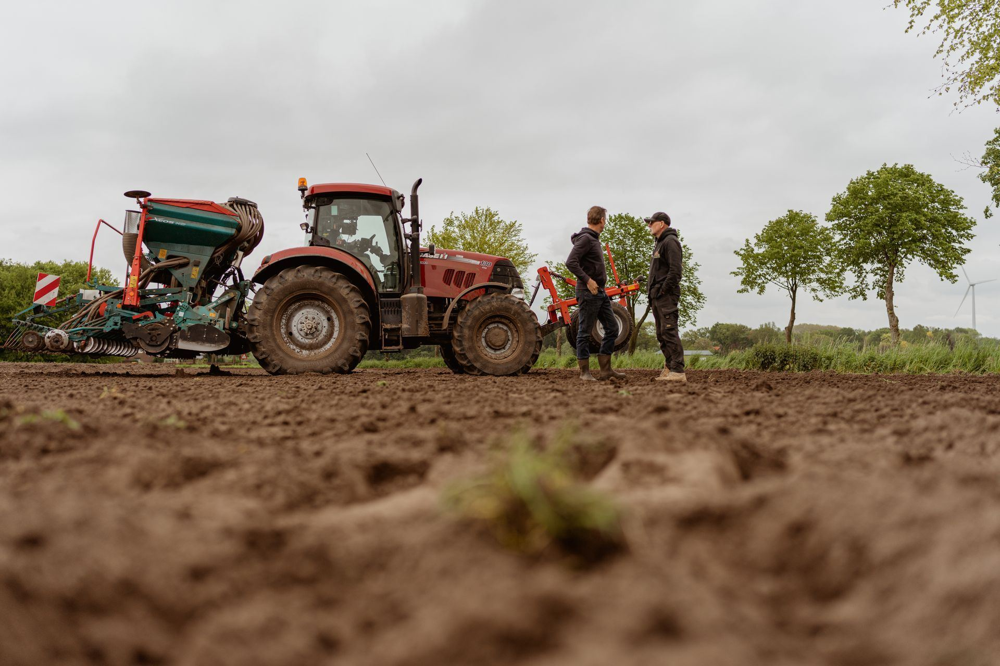
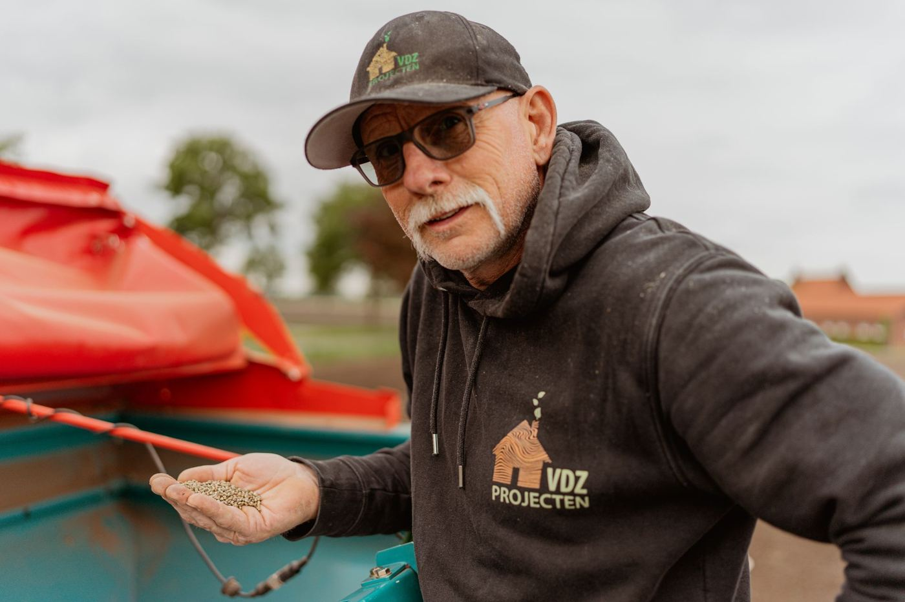
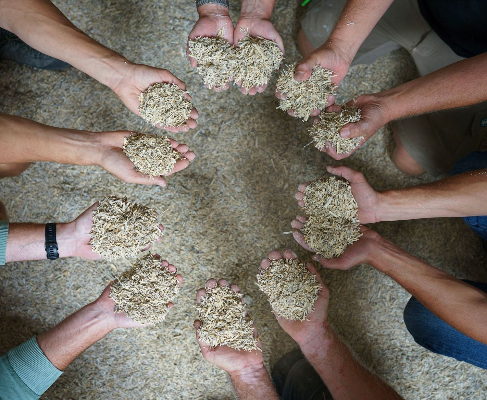

Stop met slopen. Start met transformeren.
Echt duurzaam bouwen begint bij slim renoveren van wat er al staat. Wij vertalen je wens in logische stappen.
- Renovatie
- Aanbouw en verbouw
- Dakrenovatie
- Woning van het gas af
- Begeleidend advies
- Workshops

90%minder energiebehoefte voor je gebouw
25 kWhper m² per jaar, vooraf berekend
Van het land naar je muur.
Natuurlijke materialen die ademen en vocht reguleren. De hennep wordt lokaal geteeld en verwerkt, onder andere door Van Land Naar Pand in Ulvenhout.
- Hout
- Hennepals kalkhennep, voor vloer en isolatie
- Stro
- Leemleempleister regelt het vocht
- Kalk
Waar begin je? Bij de volgorde.

Eerst even kennismaken.
Walther Dingemans is al meer dan 15 jaar actief in de groene bouwwereld en is gecertificeerd via het Passive House Institute. In een kennismaking krijg je helder wat er bij jouw project komt kijken, ook als je zelf bouwt.
- Duidelijkheid over haalbaarheid en aanpak
- Inzicht in energiebesparende strategieën
- Kennis van natuurlijke bouwmaterialen
- Handvatten voor ontwerp en uitvoering
- Tips om fouten en extra kosten te voorkomen

Leren door het te doen.
Workshops op een actief bouw- of renovatieproject, voor doe-het-zelvers en professionals.
- Hennepvloer aanleggen
- Luchtdicht bouwen met dampopen systemen
- Biobased renoveren
- Stucen met leem
- WTW-systemen
- Dak-, wand- en plafondisolatie
- EnerPHit-informatieworkshop
Breda, Tilburg, Gilze-Rijen, Zeeland, Arnhem, Maastricht en Den Haag